Um lugar com história e natureza
O Sítio Serra Bonita é mais que uma hospedagem. É um pedaço da história da TV brasileira, um espaço de lazer completo e um refúgio verde a apenas 60km de São Paulo.
Cenário de Novelas
Local de gravação de "Meu Pé de Laranja Lima" e "O Todo Poderoso"
8 Acomodações
7 chalés aconchegantes e 1 cabana exclusiva pra sua família
Lazer Completo
Piscinas, quadras, trilhas, lagos e muito mais
Estrutura de Lazer Completa
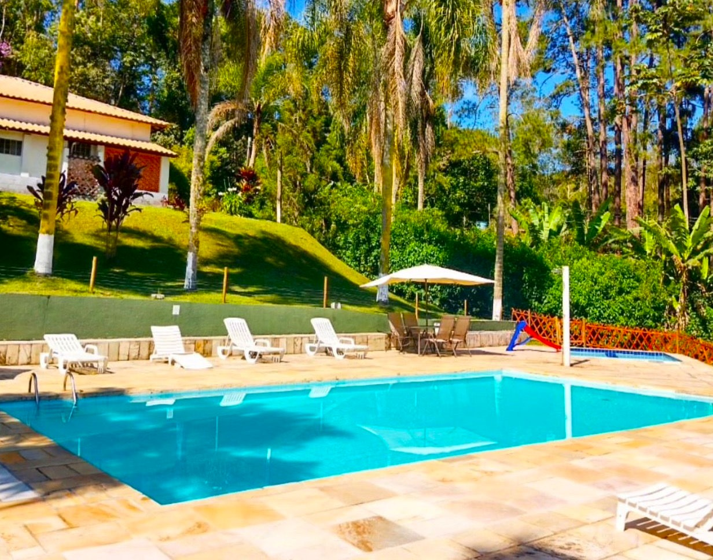
Piscinas
Adulto e infantil para toda família se refrescar
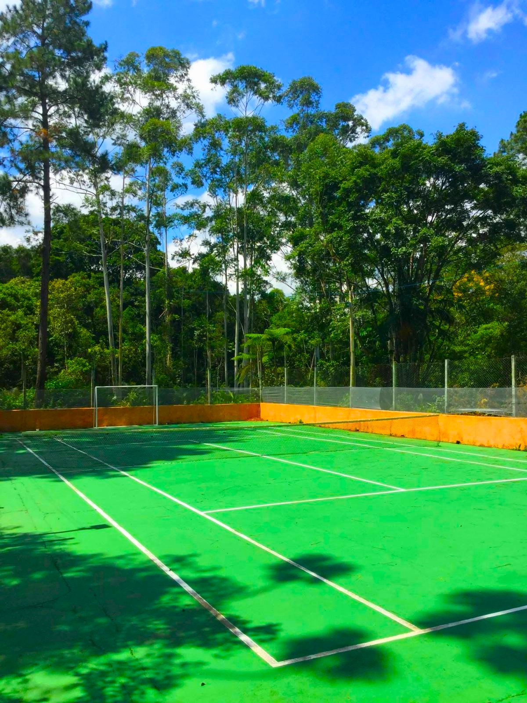
Quadra de Tênis
Quadra aberta para jogos e treinos
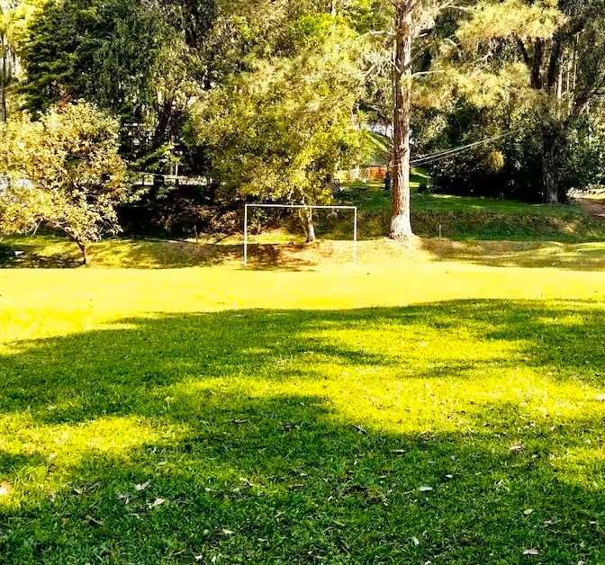
Campo de Futebol
Gramado para brincar e aproveitar
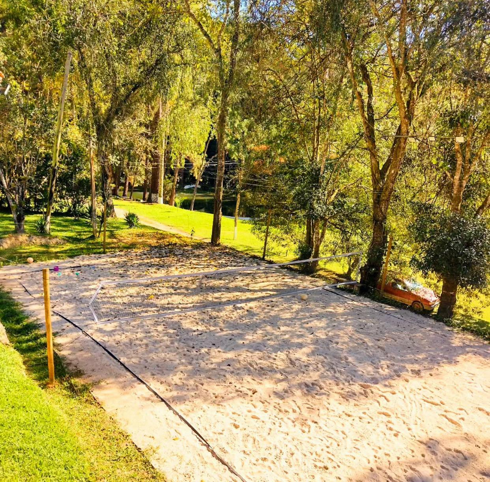
Beach Tennis
Areia fofa para diversão completa
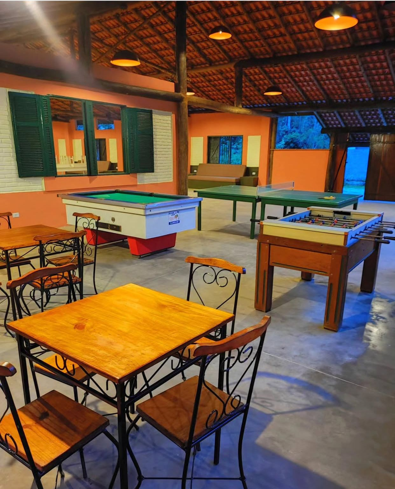
Salão de Jogos e Festas
Sinuca, pebolim e espaço para eventos
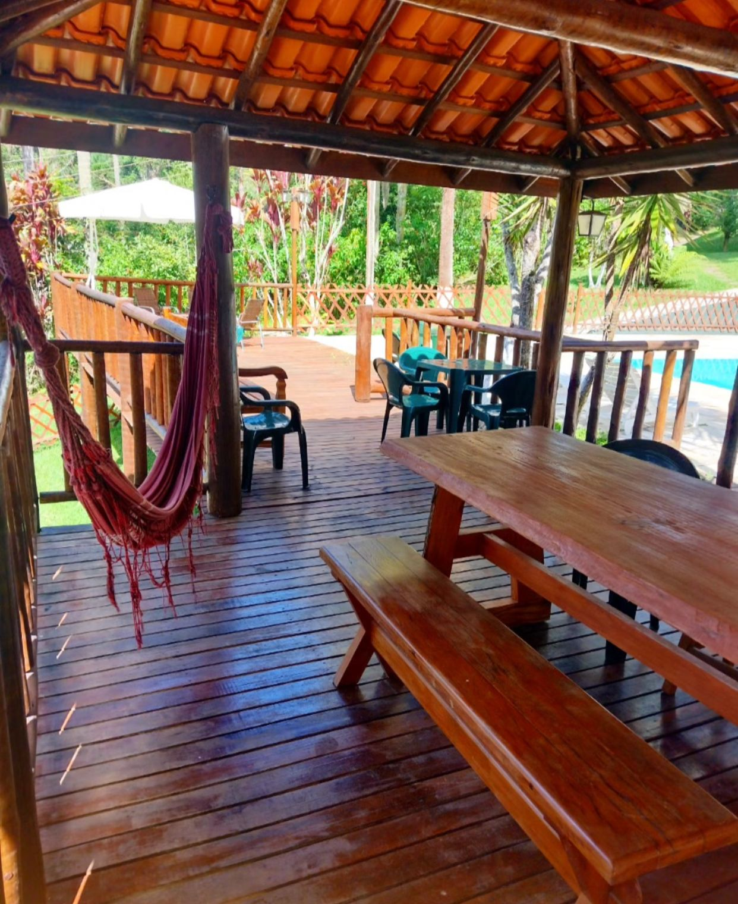
Área Gourmet
Churrasqueira completa com Deck

Trilha Ecológica
2 km de caminhada em meio à mata nativa
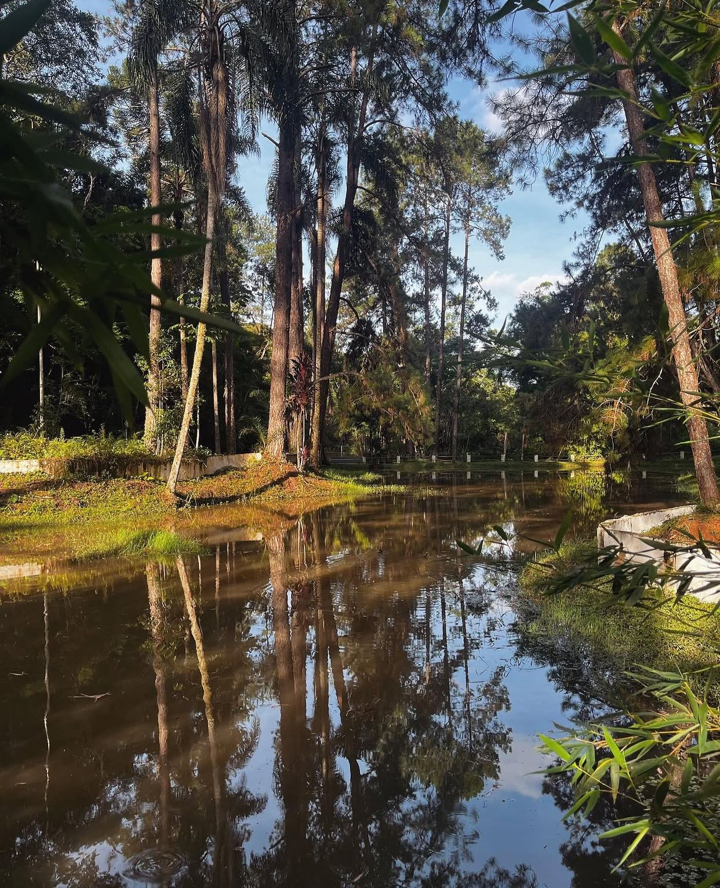
Lagos
Pesca esportiva e contemplação da natureza
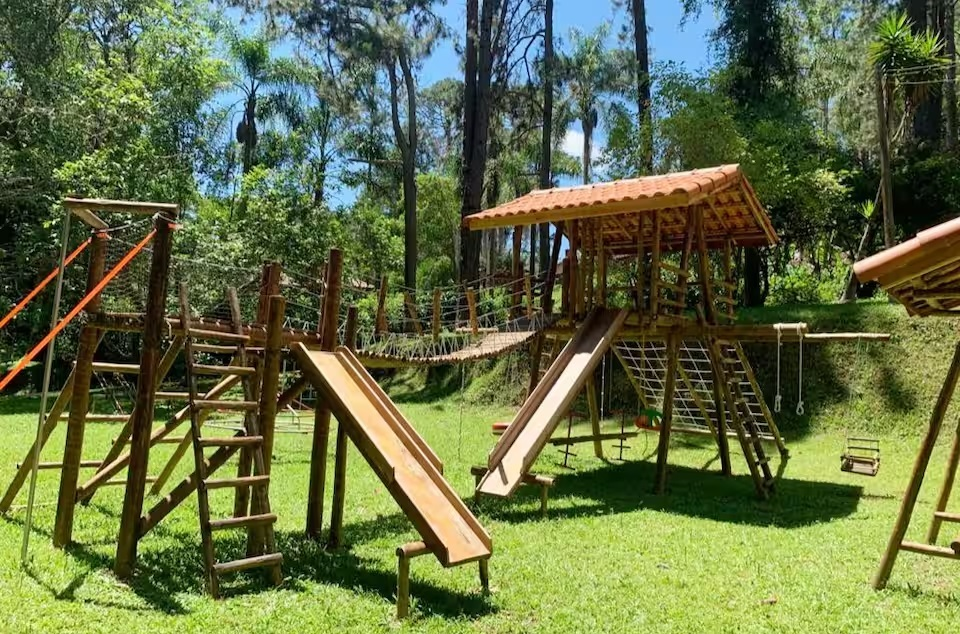
Playground
Área infantil completa para as crianças
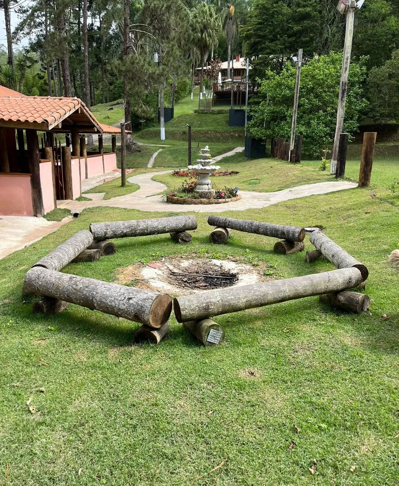
Espaço fogueira
Desfrutar e convidar a família para aquecer-se
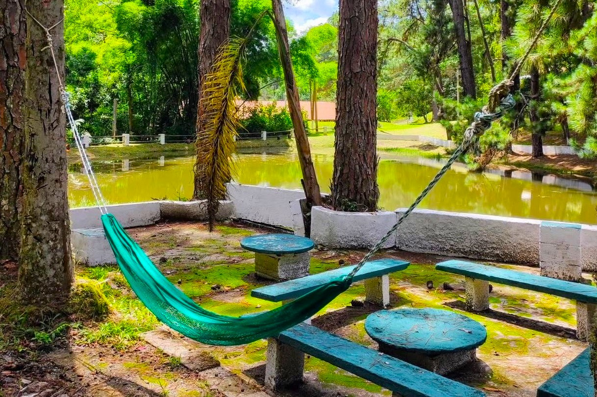
Área ao ar livre
Curtir e relaxar na natureza
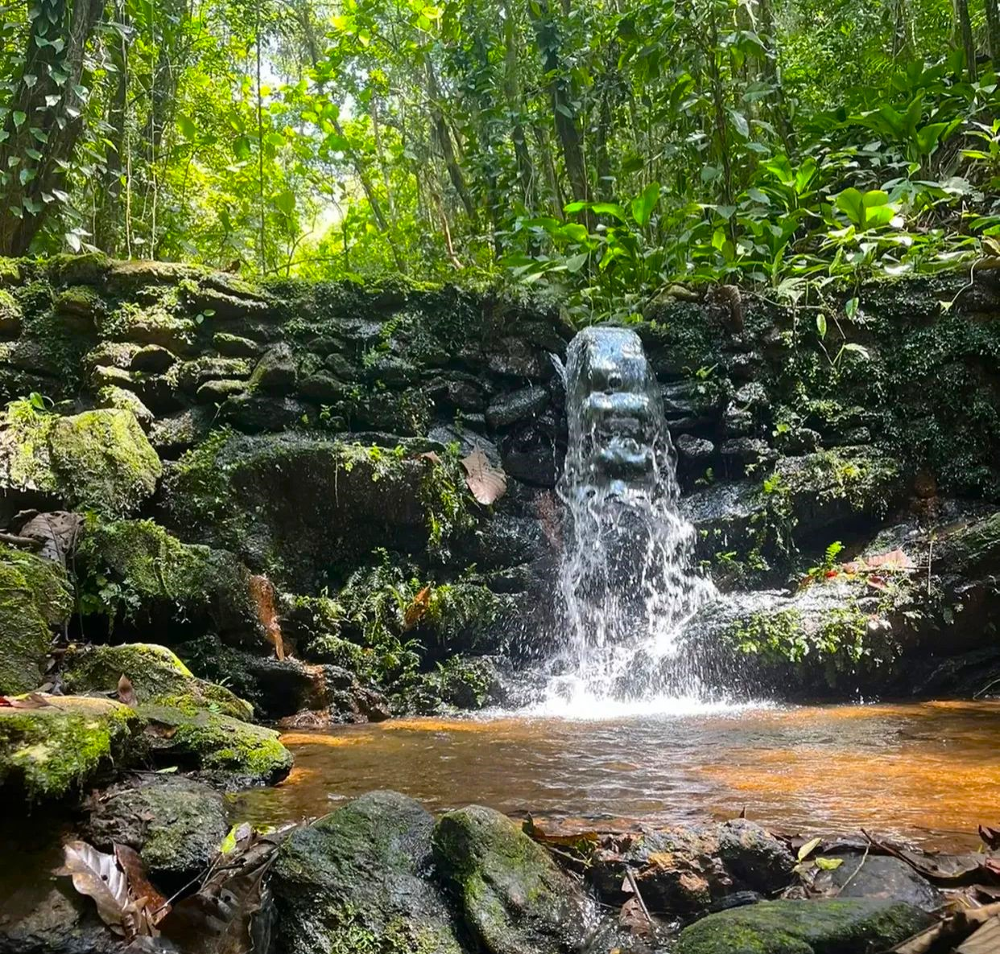
Cascata
Conheçam nossa cascatinha na mata

Conheça São Lourenço da Serra
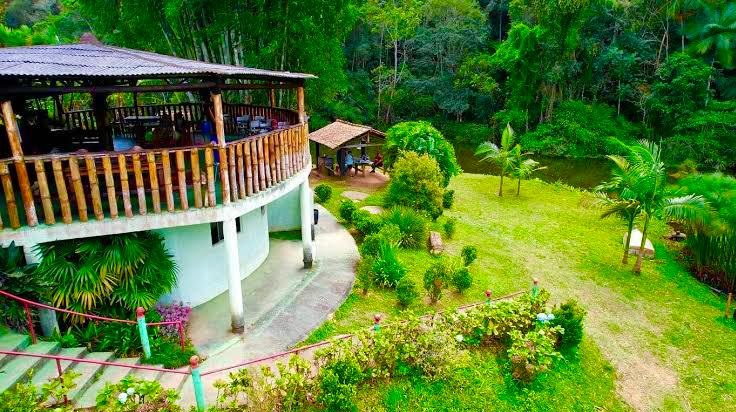
Pesqueiro Recreativo Triângulo 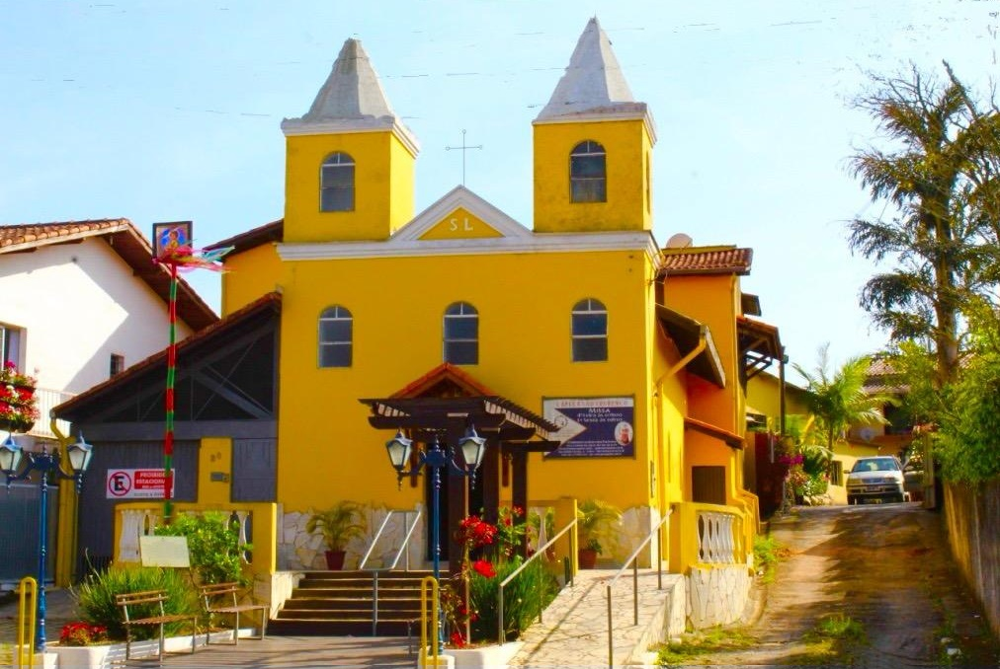
Triângulo Azul, São Lourenço da Serra - SP
Centro, São Lourenço da Serra - SP
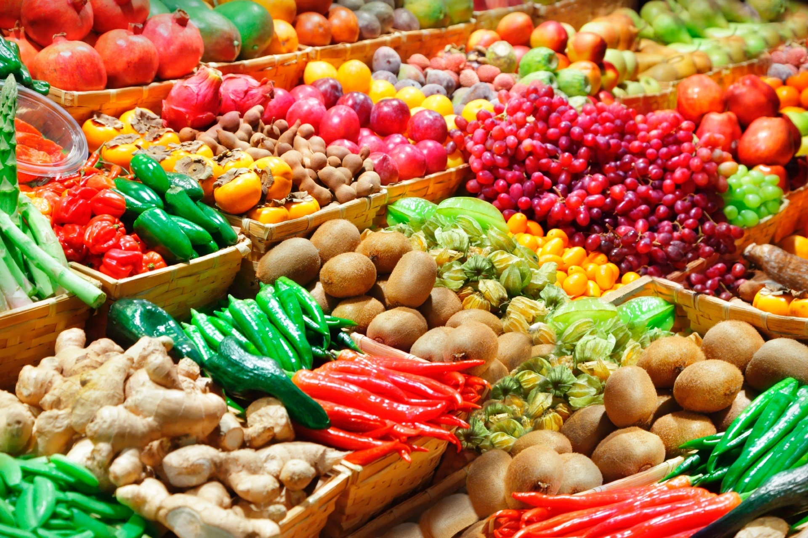
Feira Livre de São Lourenço da Serra - Praça 10 de Agosto 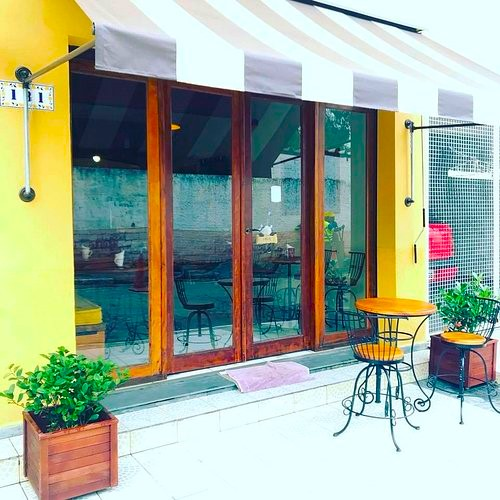
Centro, São Lourenço da Serra - SP
Maria Café - Praça 10 de Agosto, 131
Centro, São Lourenço da Serra - SP
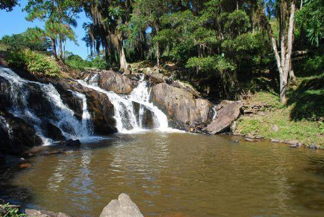
Cachoeira dos Pratas - Estr. dos Borges, 1
Bairro dos Pratas, São Lourenço da Serra - SP
O que fazer em São Lourenço da Serra
Para quem curte cachoeiras, lagos e um contato maior com a natureza nativa, São Lourenço da Serra é uma ótima opção fora da rota turística tradicional para acrescentar no seu checklist de viagem.
Pela proximidade da capital, que de carro a viagem dura em torno de 1 hora, a cidade pode ser visitada até em um “bate-volta”, mas tendo infraestrutura suficiente para acomodar o viajante por alguns dias se quiser dar aquela descansada.
Com apenas 15 mil habitantes, a cidade ainda é bem “recente”, pois foi emancipada de SP há 20 anos apenas e agrada aqueles que gostam desse clima mais interiorano.
Com atrações bem direcionadas às belezas naturais que a cidade oferece, o ecoturismo e o turismo de aventura são os principais focos das atividades oferecidas no local.
Os passeios são pensados aproveitando as cachoeiras, a vasta área de Mata Atlântica e belas paisagens de fauna e flora diferenciados.
Por ainda estar explorando todo o potencial turístico da cidade, ainda não existem muitas opções de atrações e os que existem não possuem tanta infraestrutura, podendo causar estranhamento nos viajantes. Ainda assim, as opções podem ser distribuídas em um final de semana com foco em descanso.
Para quem curte pescaria, conheça a Estância Pesqueira Campos ou o Pesqueiro Triangulo. Uma das principais atividades da cidade, os pesqueiros são lugares muito conservados para pescaria e uma bela paisagem natural.
Ao tratarmos das cachoeiras, não deixe de conhecer a Cachoeira do Paiol, com ótimas piscinas naturais, a Cachoeira do Sítio dos Lavras e a Cachoeira dos Pratas.
Feira Livre Noturna de São Lourenço da Serra acontece tradicionalmente às quintas-feiras na Praça 10 de Agosto. O evento oferece produtos frescos, hortifruti, queijos e doces caseiros, pescados, pastéis, artesanato e gastronomia local, sendo um ponto de encontro comum na cidade. Em eventos especiais, como o Conisud Revela Sudoeste, a praça também recebe atrações culturais e turísticas regionais.
O município possui ainda o acampamento de férias Rancho Ranieri, com muitas opções de ecoturismo como tirolesa, canoagem, trilhas e mais.
O Templo Kinkaku-Ji do Brasil também fica pertinho da cidade, sendo uma réplica do templo de mesmo nome japonês, que fica ao redor de um belo lago e jardins muito bem cuidados.
Alimentação
Embora não exista um leque muito grande de variedades na cidade para alimentação, o turista não deve passar aperto por aqui em nenhuma refeição.
Em sua visita, dê uma passadinha no Maria Café, para bolos, sobremesas e cafés. Para comida caseira, aposte no Restaurante Morro das Águas ou no Brasileiríssimo. Para quem quer variar e curtir comida japonesa, o local possui o Restaurante Japa Tomotomo.
Como chegar em São Lourenço da Serra
Ao sair de São Paulo, basta acessar a rodovia BR-116 até São Lourenço da Serra em um trajeto que dura apenas 1 hora.
Se você vem de fora do estado, o aeroporto mais próximo é o de Congonhas, então vale descer lá e seguir viagem com algum carro alugado. Aqui você confere algumas opções baratas de passagens aéreas.
Até o momento da consulta não existem linhas de ônibus que façam o percurso da capital direto para o município.
Atrações turísticas na Região
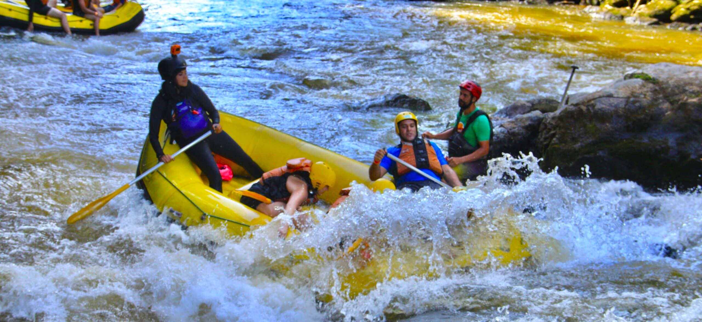
A principal atração, no Sítio Canoar e base Rio Abaixo.
Estr. dos Carmos, 2000 - Dos Carmos, Juquitiba - SP
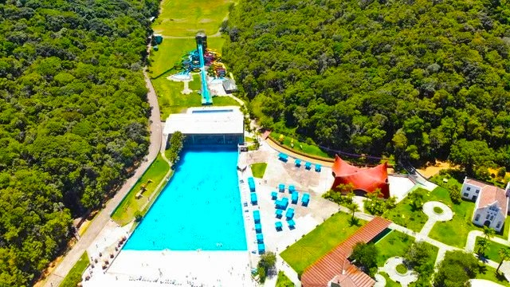
Oferece lazer, trilhas e piscinas, ideal para famílias.
Estr. do Jacuba, 2011 - Jardim das Palmeiras, Juquitiba - SP
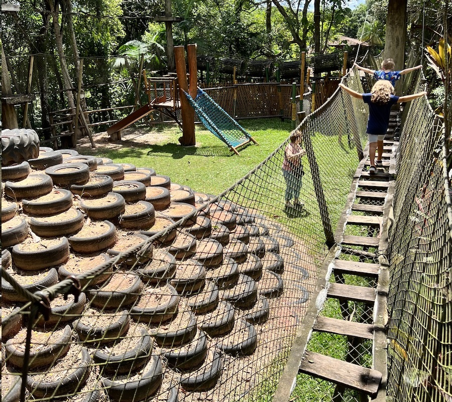
Centro de lazer e cultura que oferece experiências de natureza.
R. Régis Bittencourt, Km 323 - Bairro das Senhorinhas, Juquitiba - SP
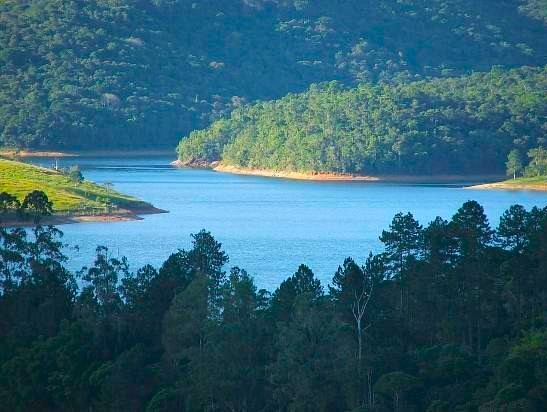
Ótima para pesca esportiva, passeios de barco e jet-ski.
Estr. da Marina 260, - Barnabés, Juquitiba - SP
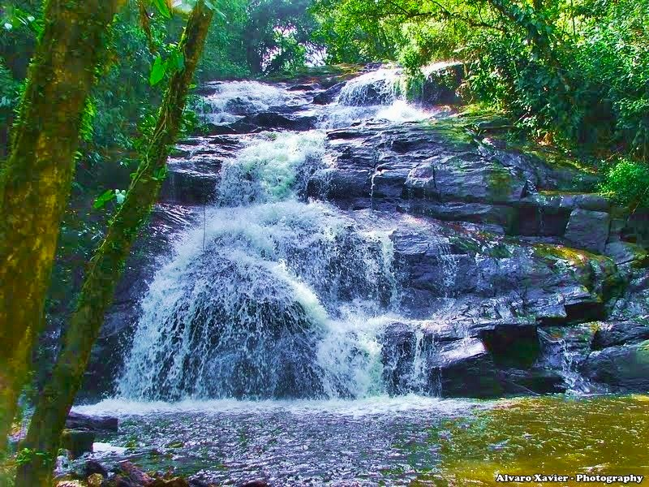
Destaque para a Cachoeira do Palomar, Salete e do Cafezal.
Estr. do Soturno - Palmeiras. Loteamento Palomar, Juquitiba - SP
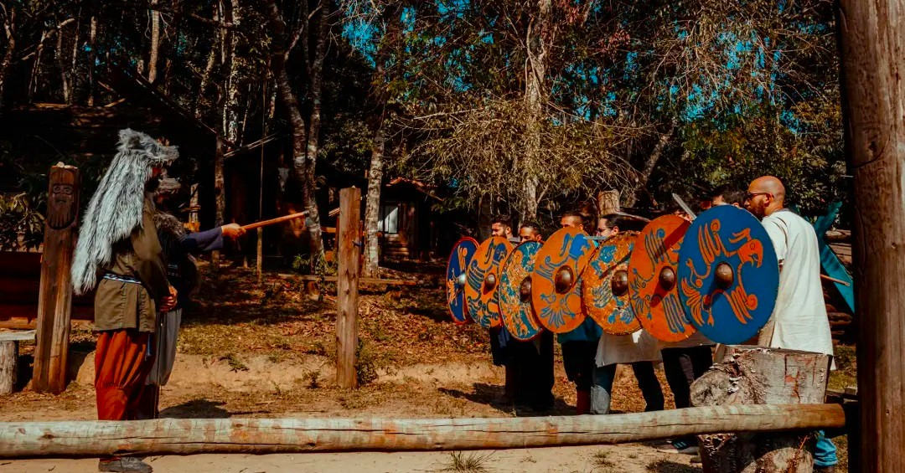
Cenário temático inspirado na cultura nórdica.
Templo Kinkaku-Ji - R. Camarão, 220 - Chácara das Palmeiras, Itapecerica da Serra - SP
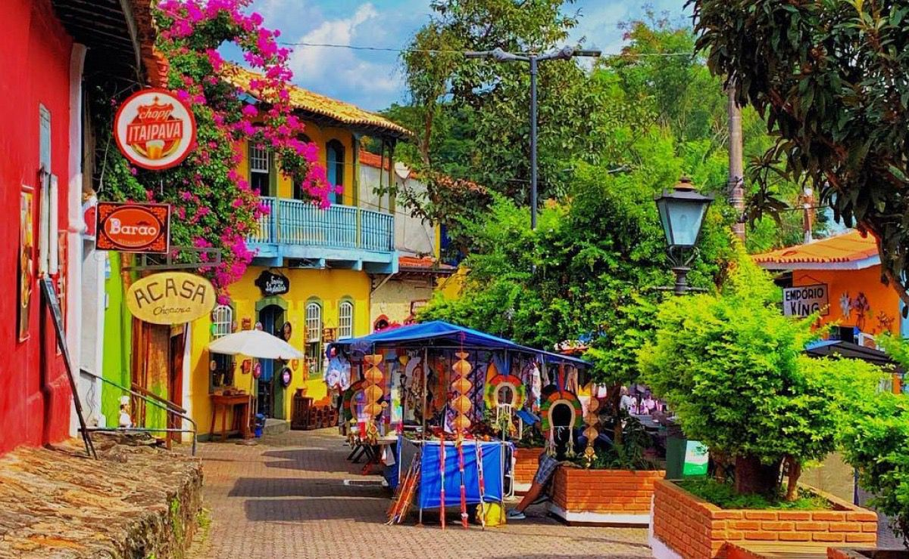
Reconhecido por sua fusão entre história, cultura e artesanato.
Largo 21 de Abril, 29 - Centro, Embu das Artes - SP
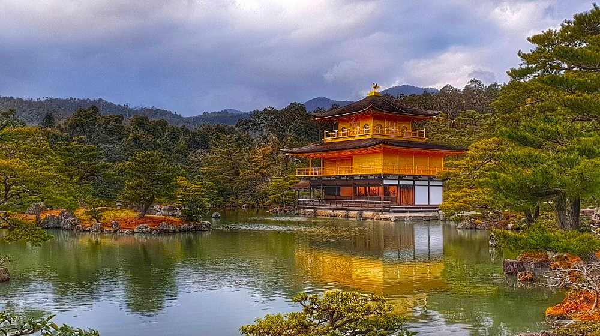
O local é focado em contemplação, meditação e paz.
R. Camarão, 220 - Chácara das Palmeiras, Itapecerica da Serra - SP
Fonte: quantocustaviajar.com